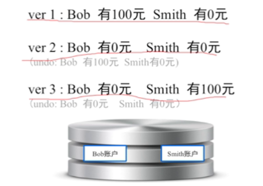
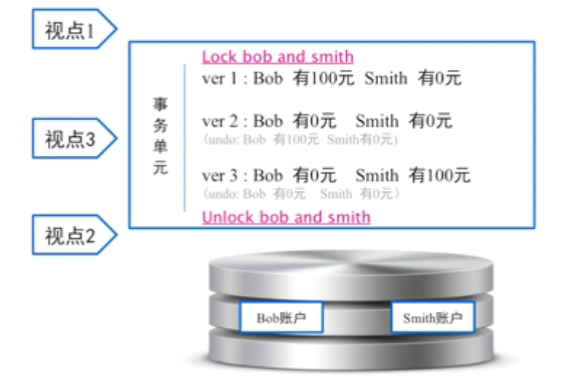
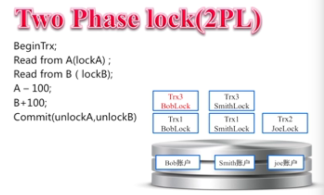
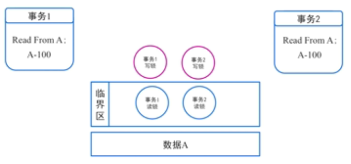
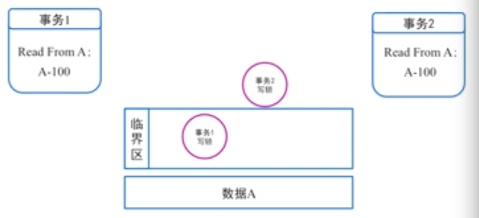
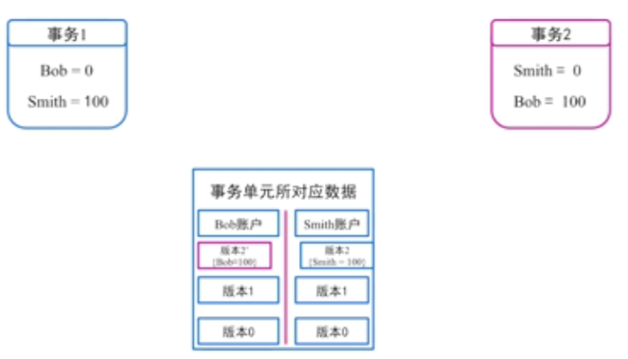
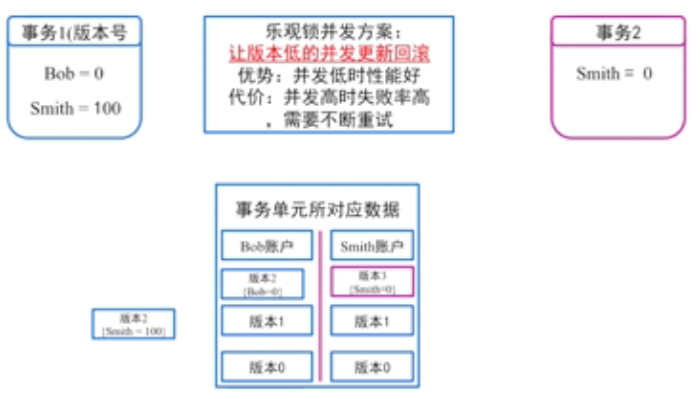

一、单机事务
事务简介
一个事务单元
一组事务单元 （目标：快｜并发＋正确性｜happen－before关系）
- 排队
- 排他锁 🔒：针对同一个单元的访问进行访问控制
- 读写锁 🔒：针对读读场景做优化 （针对读写做优化，读不加锁，不可重复读）
- MVCC：针对写读场景做优化 （主流实现，代价：系统复杂度增加）
读读、读写、写读场景都可以做到不冲突，只有写写会冲突；
事务处理的常见问题
多个事务，谁先谁后
- MVCC 一个读请求应该读哪一个写之后的数据；
- 实现方式：逻辑时间戳 （比如Innodb的Trx_id）；
故障恢复
- 业务属性不匹配：业务逻辑错误，回滚事务；
- 系统崩溃：回滚事务；
死锁与死锁检测
死锁产生原因：两个线程｜不同方向｜相同资源
死锁的解决方案：
（1）尽可能不死锁：降低隔离级别，一般不常用；
（2）碰撞检测：效率高，终止一边；
（3）等锁超时：效率低，长事务不适合；
主流数据库主要使用碰撞检测，辅以等锁超时；
二、深入单机事务
事务的ACID
原子性

原子性保证事务或者成功执行ver3，或者失败回滚ver1，不会处于中间状态；
原子性不会关心ver2会不会被其他事务看到；
一致性

一致性的保证在于处理视点3：将视点3上移到视点1或者下移到视点2，保证事务单元全部成功后才可见；
一致性的核心在于保证事务的happen-before关系，因此导致问题并发度太低；
隔离性：以性能为理由，对强一致性的破坏
（结合两阶段🔒来考虑隔离级别）
序列化读写（Serializable）
排他锁 ：对于冲突资源只能一个一个的访问，多个事务串行执行
性能差～不可用
可重复读（Repeatable）
读写锁：读锁不能被写锁升级
读读并行
读已提交（Read Committed）
读写锁：读锁能被写锁升级
（1）读读并行
（2）读写并行
读未提交（Read Uncommitted）
只加写锁，读不加锁
（1）读读并行
（2）读写并行
（3）写读并行
隔离性扩展
快照读（Snapshot Isolation）
（1）针对读多写少场景优化
（2）并行度能达到或超过读未提交，而隔离级别很高；
持久性：事务完成后，事务对数据库的更改持久的保存在数据库之中。
丢数据原因1：数据在内存中，未写入磁盘
group commit , IOPS与吞吐量的权衡
丢数据原因2：磁盘的物理损坏
RAID
单机事务的典型异常应对策略
业务属性不匹配：回滚。
例如：转账时bob并没有足够金额；
系统宕机：重启后进入recovery模式；
事务的调优原则
在不影响业务应用的前提下
减少锁的覆盖范围
- Misaim表锁 －> Innodb行锁
- 原位锁 －> MVCC多版本
增加锁上可并行的线程数
- 读锁写锁分离，允许并行读取数据
选择正确的锁类型
- 悲观锁：适合并发争抢比较严重场景
- 乐观锁：适合并发争抢不太严重场景
乐观锁？悲观锁？
三、单机事务拾遗
事务单元扩展：实现

体会利用两阶段锁来实现一组事务单元。
锁实现是上世纪7、80年代的数据库实现，现在的主要实现是MVCC和部分锁实现；
死锁扩展-U锁
死锁是很容易产生的，针对同一个数据进行读写就可能产生；
12Update set A = A-1where id = 100; //一条语句两个原子操作
更新锁（U锁）
加锁条件:当一个事务进行update操作时,数据库系统会先为事务分配一把更新锁.
解锁条件:当读取数据完毕,执行更新操作时,会把更新锁升级为独占锁.

MVCC拾遗
快照读（Snapshot Isolation）
（1）针对读多写少场景优化
（2）并行度能达到或超过读未提交，而隔离级别很高；
写和写，有没有可能并行？
（1）假设写写并行：bob给smith转账，同时smith给bob转账；

（2）方案一：加锁
（3）方案二：乐观锁并发，让版本低的并发更新回滚。 优势：并发低时性能好； 代价：并发高时失败率高，需要不断重试；
